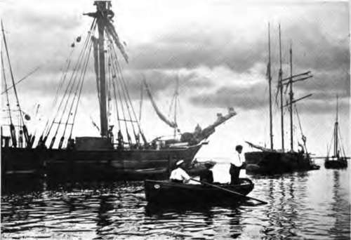
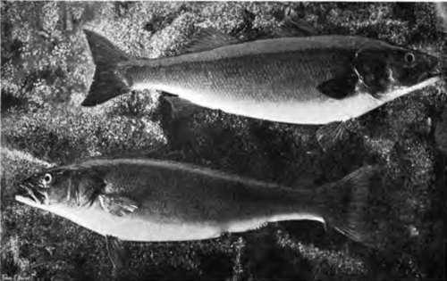
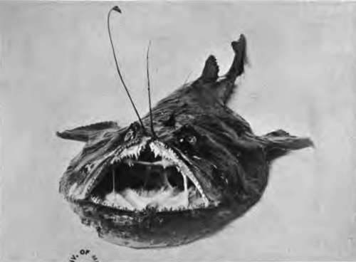
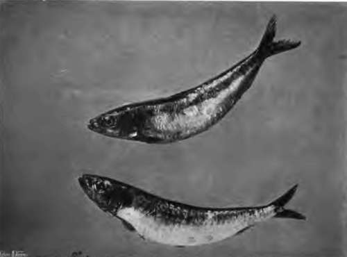
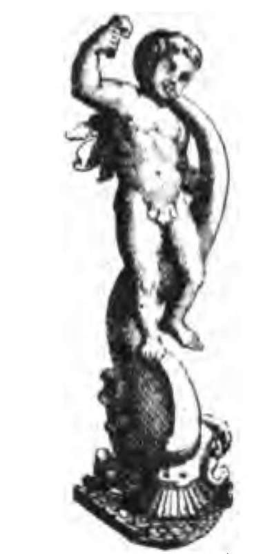
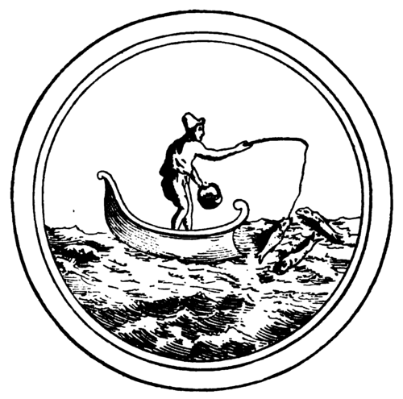

Chapter XXV. Sea-Fishing: Introductory
Description
This section is from the book "Fishing", by Horace G. Hutchinson. Also available from Amazon: Fishing.
Chapter XXV. Sea-Fishing: Introductory
Little by little the sport of sea-fishing is attracting the attention in this country that has so long been accorded to its claims elsewhere. In almost every Mediterranean country long rods have for ages waved over rocky pools for bass, and horse-hair lines have hauled grey mullet from behind the surf that breaks on sandy shores. In Australian seas the trumpeter and schnapper, and at the Cape of Good Hope the snoek and steenbras, have afforded sport to the white man ever since he settled in those southern regions.
For some reason or other, however, probably in great measure because his lakes, broads, and rivers gave such excellent sport before they were unquestionably overfished, the Englishman at home did not avail himself of the opportunities on his own coasts until a comparatively recent time. It has been said that scientific salmon fishing as now practised was an unknown pastime forty years ago; and it may with quite as much accuracy be asserted that scientific sea-fishing, as expounded by "John Bickerdyke" and others, is a development of the last fifteen years. Much has been done to popularise it during the ten years that have elapsed since the inauguration of the British Sea Anglers* Society, but even now its recognition is only just becoming general. When I was a schoolboy-no great time ago, as time goes-sea-fishing for pleasure meant hanging a lead that would have looked well on a grandfather's clock over the side of a boat, on a coarse brown line, and catching, at intervals of some minutes, a dab or whiting of about half the weight of the lead. In those intervals some one in the boat was generally sick, so that the Punch caricatures of the early 'eighties were not far wide of the mark. The chief expense of the amateur sea fisherman in those days was usually the half-crown an hour which he paid to his boatman-a boatman, by the way, and not as a rule a fisherman. He used that worthy's tackle, and the bait was included in the exorbitant charge. Nowadays the enthusiast spends on his sea-tackle very little less than the salmon fisher; indeed, since tarpon and tuna are in every sense of the word sea-fish, and their capture in consequence sea-fishing, he may be said, under certain conditions, to spend more. To some extent the lateness with which sea-fishing has taken its proper place among sports at home may be due to the comparative lack of large sporting fish on our coasts.
61.- In Harbour
62.- Two Champion Bass.
Compared with the tarpon and tuna and sea-bass weighing hundreds of pounds, which anglers take on the rod off the coast of Florida or California, our bass and pollack, and even conger, are pigmies. At the same time, we cannot nowadays permit ourselves to be as difficult to please as the Brobdingnagians, who forbore to catch the fish of their coasts because they were no bigger than those of European seas. Nor can our sea fish be regarded as altogether too insignificant for the average ambition. As a case in point-though the recital of personal exploits is a little out of place here-I may, in passing, mention two bass, weighing respectively 9 lbs. and 11 lbs. 5 oz., which I caught, in the order given, on two consecutive mornings last July in a Devon estuary. Of such bass-fishing in the tidal waters of rivers more will be said presently, but these are merely cited in order to show that there is sport to be had in our seas by those who will look for it in the proper way. Both of these fish were taken with live bait on a pliant 10-foot fly-rod, with the lightest of gear, and, since the water was crystal clear, forty or fifty yards away from my boat. Those who have fished in tidal estuaries will know the sport to be had out of an 11-lb. fish on a trout-rod, and at the end of fifty yards of fine line before even starting on its first rush, then fighting gamely every yard of the way in a five-mile tide rushing beneath a bridge. I certainly did not consult my watch on the occasion, nor had I any thought to spare for the town clocks that may have struck during that struggle; but I know pretty well, from the times of two Great Western fast trains, which sped by in either direction while the bass and I were deciding who was to be master, that the fight could not have lasted much less than five-and-thirty minutes. As the bass and its smaller fellow now repose, along with the treacherous hook that proved the undoing of both, behind my writing table, it will be surmised that the fortunes of the day went as I should have wished. And if the capture of two such bass on two days running is not sport, then I do not know what is. This luck-I do not for one moment claim it as anything else-is exceptional, it is true, but the rarity of such angels' visits nowadays lends them an added charm.
Perhaps the best plan of division for the notes that follow will be one which to every sea fisherman of experience will suggest itself as the obvious. It has not indeed the merit of novelty, for one angling writer at anyrate-my friend "John Bickerdyke," in his admirable " Letters to Young Sea Anglers," in the later edition of which the element of youth has been erased from the rubric-has previously adopted it. Novelty, however, is not everything where precedent is excellent, and I shall therefore divide these remarks under two heads: fishing from a boat, whether a rowing or a sailing boat; and fishing from a fixed position, such as a pier or harbour, an uncovered reef of rocks, or a beach of sand or shingle.
Either of these may have its advantages. Leaving aside for the moment the all-important consideration of temperament-I mean, in respect of the most vulgar, but also most distressing, of marine maladies-there can be no doubt that a boat of some kind is the royal road to sport in the sea. It gives the angler command over so vast an expanse of water, and, unless he be so unhappily constituted that its movements simultaneously deprive him of command over himself, he will be able to operate on deep-water shoals of fish at which the squeamish landsman must helplessly gaze, as Napoleon gazed at this unconquered island from the sands of Boulogne. In a few, a very few, cases a boat offers little or no advantage, or may even be less convenient than a quay or pier. Such fish, for instance, as smelts and grey mullet, which at certain seasons browse alongside weed-grown docks, or, again, the spring shoals of leaping bass that feed greedily in the sunlit, rainbow-hued surf right up to a jagged line of rocks, are cases in point, for, on the one hand, the boat would give less chance of sport than the quay, being likely indeed to disturb the fish, and in the case of bass playing close to rocks, the use of a boat might be actually dangerous. There is a third case, that of winter cod and whiting feeding just behind the breakers on the open East Coast, in which beach-fishing not only has obvious advantages over boat-fishing, but is generally indeed the only course open to those who seek these fish at that particular season.
These are, however, the exceptions ; and fifty cases might with ease be cited in which the boat is by far the best method of reaching the fish, while in the vast majority of these, indeed, it is Hobson's choice. The capture of bass in a tidal river, already mentioned, is one; the pursuit of large pollack and sea-bream and sharks in deep water is a second; the taking of mackerel on moving baits, a very popular form of amusement in the summer months with those who like to catch a fish that is at once beautiful in life and not unworthy of attention on the breakfast table, and without much exertion or study of first principles, is a third; and these may suffice by way of illustration, as I must soon proceed from ethical generalisations to practical details.
There is one piece of advice which, with all diffidence, I want to offer here at the commencement. I have never tendered it before, because it seemed too daring, until surmise became conviction, and conviction was again and again borne out by actual result. I do not think any one else, at any rate quite recently, has offered it, nor, for one moment, do I think that any one will take it, but it is this. Do not, O nervous reader, make up your mind that you are going to be seasick and forego the delights of sea-fishing without giving it and yourself a trial, and, if you have the courage, a second trial after that. So many cases have come under my notice, since it was last my pleasant task to write at length on sea-fishing, of men, and ladies, too, for that matter, who were persuaded that they could never stand the least movement in a small boat, yet who, with a little brisk sport to distract their attention until their stomach and nerves had accustomed themselves to the new order of things, enjoyed themselves so much that they took to the sport with all the fervour of the convert, that I give the counsel for what it may be worth. Never having personally suffered the qualms of a complaint that is the curse of travellers and the inspiration of comic artists, my advice necessarily lacks a personal value. And yet I say: try, try, try again. It can, at the worst, only be a matter of a little determination. There will, of course, be extreme cases in which the first roll or jerk of the boat means collapse utter and complete, and individuals so constituted cannot, in mercy not only to themselves, but also to others in the same boat, do better than at once go ashore and stay there. Not for them, though, are the pleasures of angling in salt water, even from a boat, entirely proscribed. There are river estuaries in which bass and mullet, and even mackerel and conger, whiting and codlings may at the proper season be captured in water as calm as that of the morning tub. The two bass, that already threaten to emulate the revered head of King Charles, were taken in perfectly still water, at a point where the river is probably not more than a hundred yards at low water from bank to bank.
63.- Angler Fish.
64.- Cornish Pilchard
I shall, however, follow the division already indicated, and those who are resolved to keep away from the seductions of boat-fishing in deep water, must console themselves with such sport, at times excellent, as offers in landlocked " swims," as the roach-fisher would call them, and on either terra firma or some artificial continuation thereof. For the convenience, then, of the bilious-I have an affection for the orthodox word, though an eminent physician recently assured me that really bilious people are not subject to sea-sickness-the notes on calm water boat-fishing are given at the end of the first part, thus bringing them in close proximity to those portions which relate to pier and beach fishing. For strictly practical purposes, then, those to whom the frolic of dancing waves is anathema, may pass over the next fifty-six pages.

Continue to:
- prev: The Sharks (Carchariida)
- Table of Contents
- next: Chapter XXVI. Section I. Sea-Fishing From Boats: Mackerel Fishing